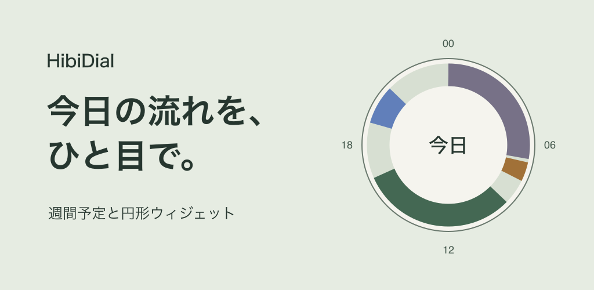

一週間を一度決める。
今日の流れは、ひと目で。
HibiDialは、曜日ごとのいつもの予定を作り、24時間の円とホーム画面のウィジェットで確認する週間プランナーです。

まずは、一週間の基本形から
- 「週間」で曜日を選び、「週間予定を追加」から名前・開始時刻・終了時刻を登録します。
- 同じ予定を使う曜日へ「コピー」すると、一週間をまとめて作れます。
- 「今日」では、その日だけ予定を変更できます。週間の基本形は残ります。
固定した予定を残し、これからの予定を15分後ろへ調整することもできます。
ホーム画面にウィジェットを追加
iPhone・iPad
ホーム画面の空いている場所を長押し →「編集」→「ウィジェットを追加」→「HibiDial」を選びます。最初にアプリを一度開いてください。
Android
アプリの「設定」→「ウィジェットを追加」、またはホーム画面を長押し →「ウィジェット」→「HibiDial」から追加します。ホームアプリによって操作が異なる場合があります。
円と「いま・つぎ」の予定を表示します。OSや省電力設定によって更新が遅れる場合は、アプリを一度開いてください。
開始通知とバックアップ
「設定」で「予定の開始通知」を有効にし、OSの通知を許可します。予定ごとの通知設定も確認してください。直近60件まで予約するため、少なくとも週1回アプリを開いて予約を補充してください。OSや省電力設定により通知が遅れる場合があります。
「JSONバックアップを保存」からファイルを自分の保存先へ渡せます。「ファイルから復元」または「JSONを貼り付けて復元」で読み込みます。復元は現在の予定を置き換えるので、必要な予定を先に保存してください。
バックアップは暗号化されていないJSONです。予定が含まれるため、保存先・共有先を確認してください。
よくある質問
ログインや料金は必要ですか？
初回公開版1.0.0は無料です。広告・アカウント登録・アプリ内課金はありません。予定は端末内に保存します。
ウィジェットが表示されない・更新されない
アプリを一度開き、ウィジェットを追加し直してください。OSの更新間隔や省電力設定によって、予定の切り替えが遅れる場合があります。
データを削除するには？
「設定」→「すべての予定データを削除」を使います。この操作は取り消せません。外部に保存したバックアップは残るため、保存先で別途削除してください。
対応する端末は？
iOS・iPadOS 17以降、Android 8以降に対応します。ストア公開の準備中です。公開後、このページにもストアへのリンクを掲載します。
お問い合わせ
操作や不具合については、以下のメールへご連絡ください。返信に必要な情報として、アプリのバージョン・OS・問題の起きた操作をお知らせください。
メールを作成予定の内容やバックアップを送る必要はありません。画像を添える場合は、個人情報を隠してください。プライバシーポリシー